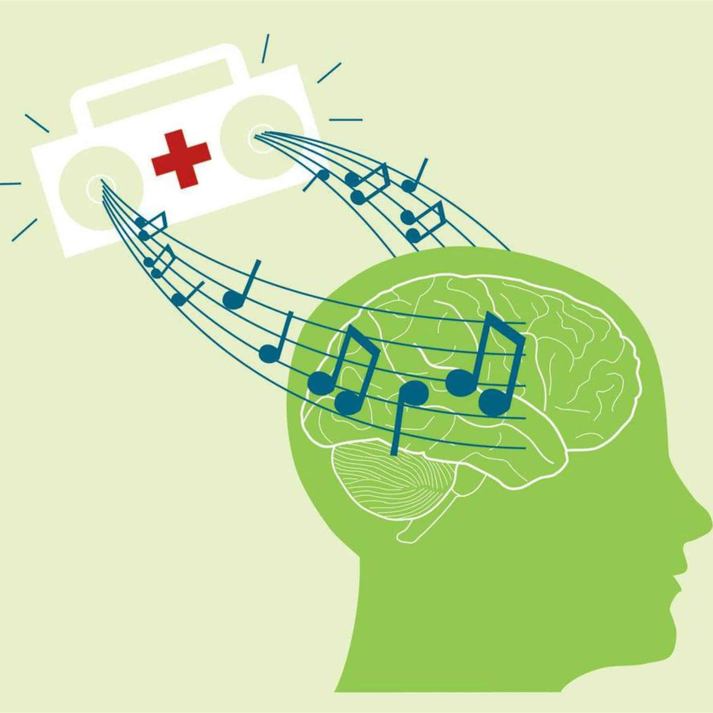
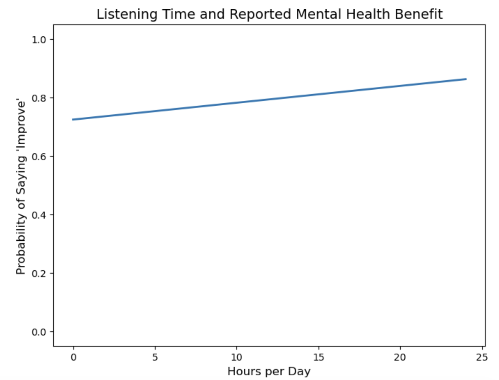

Who benefits the most from music?

This project uses survey data to examine how music relates to mental health. I focused on whether people who say music improves their mental health tend to start with higher anxiety and depression.
Rather than just describing the data, I used regression analysis to test whether the patterns were meaningful and statistically significant.
The project was guided by three main questions:
I used regression analysis to study the relationship between music and mental health outcomes. This method helped me test whether differences in anxiety, depression, and reported improvement were likely to be real patterns instead of random chance.
Figure 1. This plot shows that as daily listening time increases, the probability of reporting that music improves mental health also rises.

People who reported that music improves their mental health tended to have higher baseline anxiety. The regression coefficient for the improvement group was positive and statistically significant, which means the difference is unlikely to be random.
Listening time also mattered. The results suggest that spending more time listening to music is associated with a higher probability of reporting mental health improvement, although the relationship is not perfectly linear.
The regression tables below support the main findings. One model shows that people in the “improve” group had higher anxiety on average. The second model shows that listening time is positively associated with the probability of reporting mental health improvement.
Overall, the results suggest that music may be especially helpful for people starting from a harder mental health state. In other words, the people who seem to benefit most from music may also be the ones who began with higher anxiety or emotional distress.
Dataset: Music & Mental Health Survey Dataset
Source: Kaggle
This website presents my PHY-231 data analysis project on the relationship between music and mental health.
{kind=link}
{kind=link}